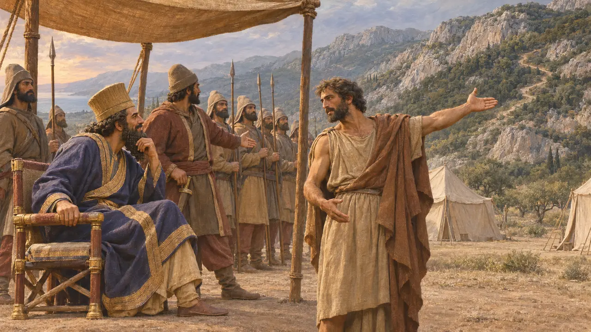
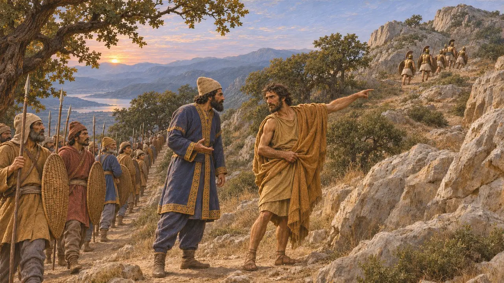
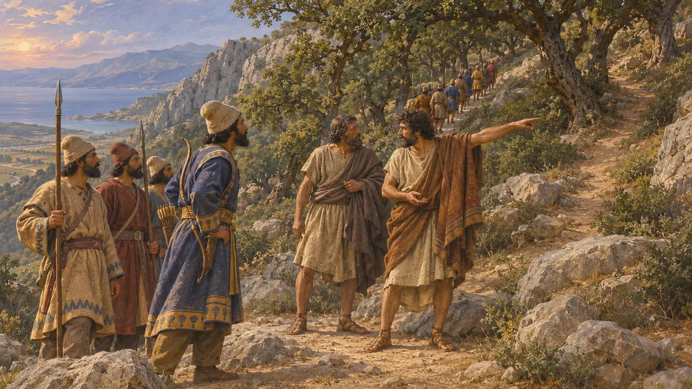
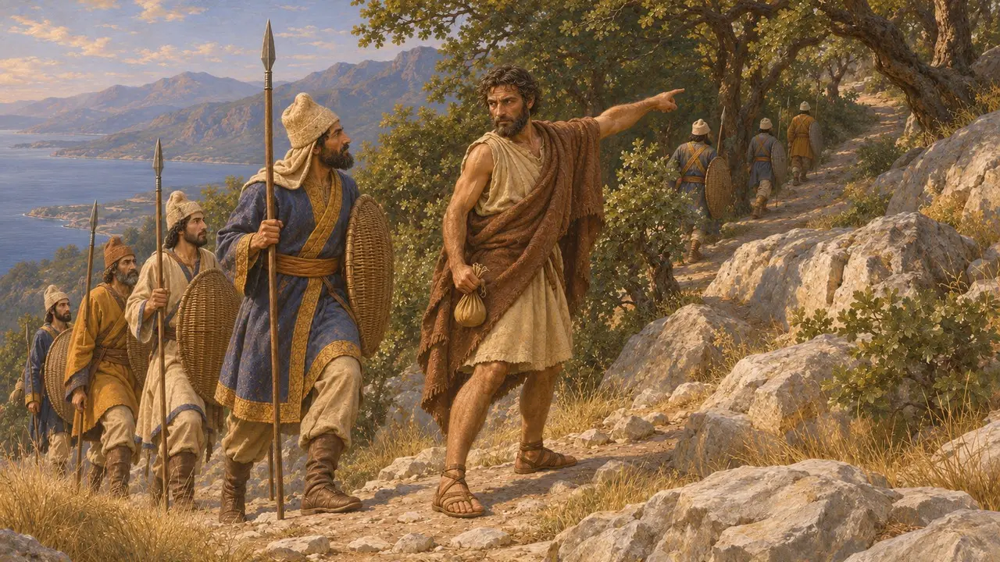

에우리데모스의 아들 에피알테스는 테르모필레 일대 지역인 말리스 출신의 그리스인이었다. 헤로도토스에 따르면 그는 큰 보상을 바라고 크세르크세스를 찾아와, 그리스군 진지 뒤편으로 이어지는 산길을 알려 주었다. 히다르네스가 이끄는 페르시아군이 그 길을 이용했고, 협로에 있던 레오니다스의 군대는 포위되었다. 그의 이름은 훗날 그리스에서 배신의 대명사가 되었다.
게임에서: 게임의 연대기는 헤로도토스의 주된 설명을 따릅니다. 보상을 바라고 크세르크세스의 병사들에게 길을 알려 주었고, 훗날 목에 현상금이 걸린 말리스인이라는 것입니다. 헤로도토스가 전하면서도 받아들이지 않은 다른 인물들의 이름은 빠져 있습니다.

크세르크세스에게 한 제안
고대의 전승헤로도토스에 따르면, 크세르크세스가 그리스군의 전열을 어떻게 무너뜨릴지 고심하던 중 에피알테스가 큰 보상을 기대하고 찾아와 산을 넘는 오솔길을 알려 주었다. 크세르크세스는 기뻐하며 히다르네스와 그가 지휘하는 병력을 보냈다. 헤로도토스는 말리스인이 오래전에 이 길을 알아내어 테살리아인을 이끌고 포키스인을 치는 데 썼다고 덧붙인다.
Herodotus 7.213, 7.215

산을 넘는 야간 행군
고대의 전승헤로도토스에 따르면 페르시아인들은 등불을 켤 무렵 길을 나서 아소포스강을 건넌 뒤, 아노파이아라 불리는 능선을 따라 밤새 올랐다. 새벽녘 그들은 길을 지키던 포키스 호플리테스 1000명과 맞닥뜨렸다. 히다르네스는 그들이 스파르타인일까 두려워 에피알테스에게 누구인지 물었다. 포키스인이라는 답을 듣자 그는 그들을 봉우리 위로 몰아낸 뒤 내버려 두고, 고개 뒤편으로 진군해 내려갔다.
Herodotus 7.215-218
도주, 현상금, 그리고 죽음
고대의 전승헤로도토스에 따르면 에피알테스는 훗날 스파르타인이 두려워 테살리아로 달아났습니다. 테르모필레의 다른 이름인 필라이에 모인 인보동맹 회의의 대표들은 그의 목에 현상금을 걸었습니다. 그 뒤 그는 안티키라로 갔다가 그곳에서 트라키스의 아테나데스에게 죽임을 당했습니다. 헤로도토스는 아테나데스가 다른 이유로 그를 죽였으며 그 이유를 나중에 밝히겠다고 했지만 끝내 밝히지 않았습니다. 그럼에도 스파르타인은 아테나데스를 기렸습니다.
Herodotus 7.213

샛길을 알려 준 진짜 인물은 누구인가
분쟁 중헤로도토스는 카리스토스의 오네테스와 안티키라의 코리달로스를 길잡이로 지목하는 다른 이야기도 알고 있었으나, 현상금이 에피알테스에게 걸렸다는 이유로 이를 받아들이지 않았다. 디오도로스는 트라키스 출신의 한 남자라고만 말한다. 그 지역 사람들은 이 길을 잘 알았고, 헤로도토스도 그리스인들 자신이 트라키스인에게서 그 길을 알게 되었다고 전한다. 많은 역사가는 특정한 배신자 한 명이 없었더라도 페르시아인이 길잡이를 구할 수 있었으리라 본다. 페르시아 측 사료에는 그에 대한 언급이 없다.
Herodotus 7.175, 7.214; Diodorus, Library 11.8; J. F. Lazenby, The Defence of Greece 490-479 BC, 1993

배신자를 일컫는 이름
후대의 전설후대 그리스 전승에서 에피알테스는 제 편을 팔아넘기는 자의 전형이 되었다. 공교롭게도 그의 이름은 그리스어로 '악몽'을 뜻하기도 하는데, 이는 밤의 악령에서 비롯된 더 오래된 의미로 그와는 무관하다. 영화 「300」 같은 현대의 재해석은 그를 기형의 스파르타 추방자로 그리지만, 이는 고대 사료에 아무런 근거가 없다.
P. Cartledge, Thermopylae, 2006
출처
- Herodotus 7.213-218
- Herodotus 7.175
- Diodorus, Library 11.8
- J. F. Lazenby, The Defence of Greece 490-479 BC, 1993
- P. Cartledge, Thermopylae, 2006
- P. Green, The Greco-Persian Wars, 1996